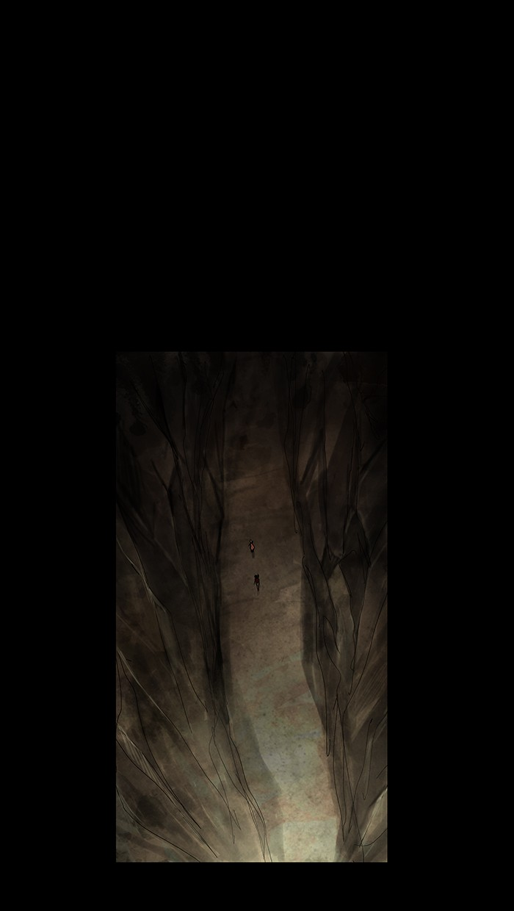
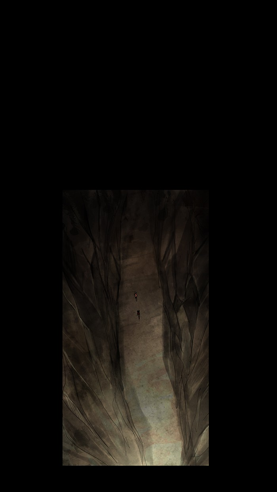
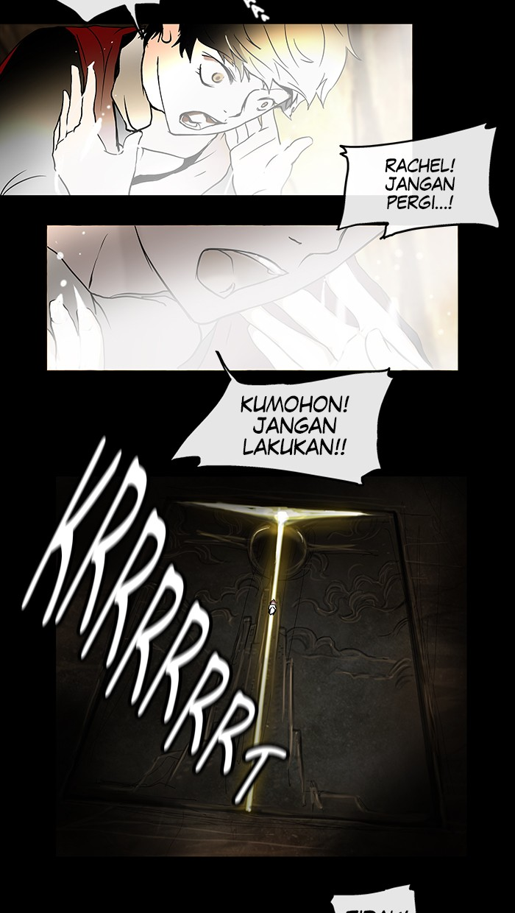
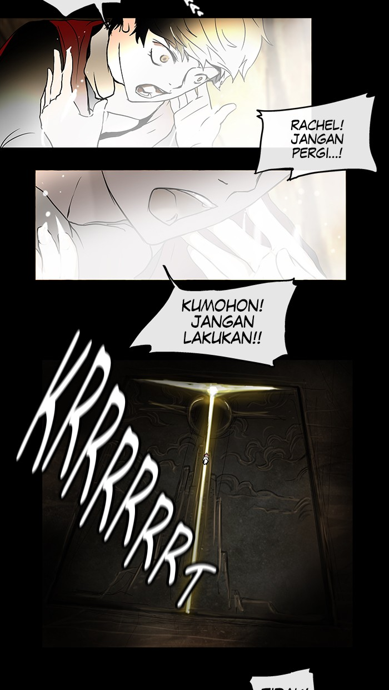
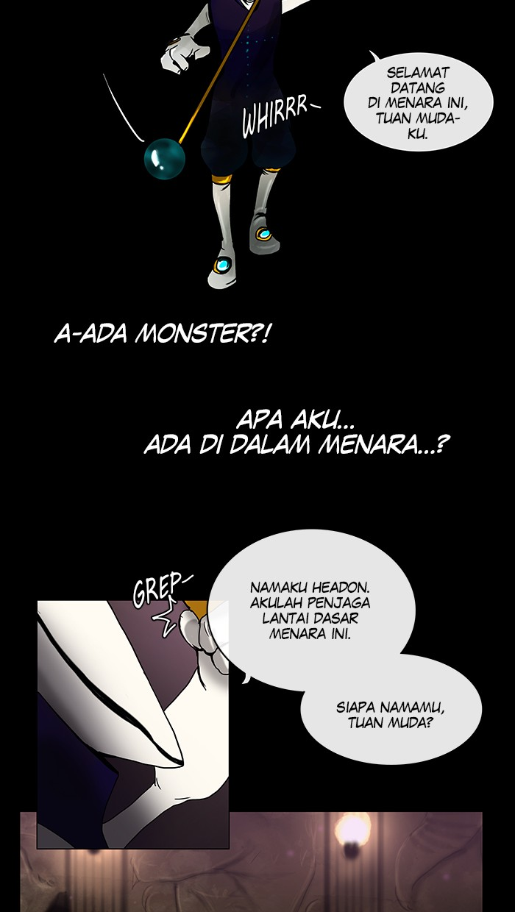
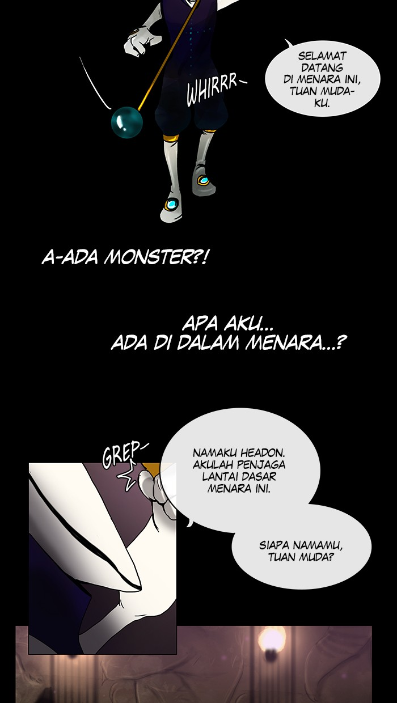

Sinopsis
Twenty-Fifth Bam had been alone his whole life until he met Rachel. Now, however, Rachel is set on climbing the Tower, and she is willing to leave Bam behind to do so. After Rachel disappears in a veil of light, Bam follows her, vowing to ascend the Tower in hopes of meeting her again. But the Tower is a dangerous place full of ancient secrets, fearsome monsters, and nefarious humans. Each floor is protected by an Administrator who puts the daring challengers through grueling tests that will push them to their limits. As he confronts Headon, the Administrator of the first floor, Bam learns that he is an ''Irregular,'' someone who was not chosen by the Tower but was able to enter it on his own, an extremely rare event inside the Tower. Regardless of this revelation, however, his path forward is clear. Be it wealth, power, glory, or even reuniting with Rachel, all desires will be realized at the top of the Tower.
Information
Type : Manhwa
Published : 5 July 2010
Serialization : Webtoon
Genre :Action,Adventure,Fantasy,Drama,Mystery


 

 

 
